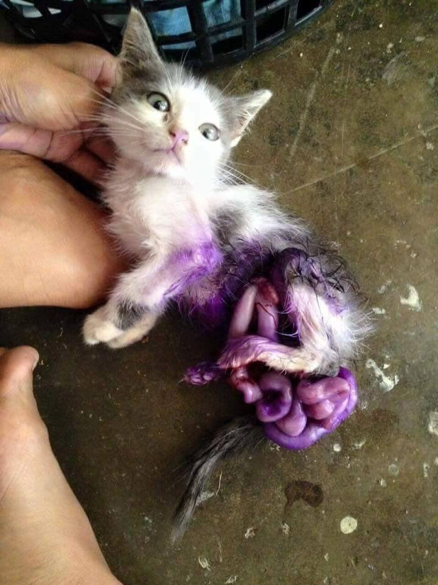
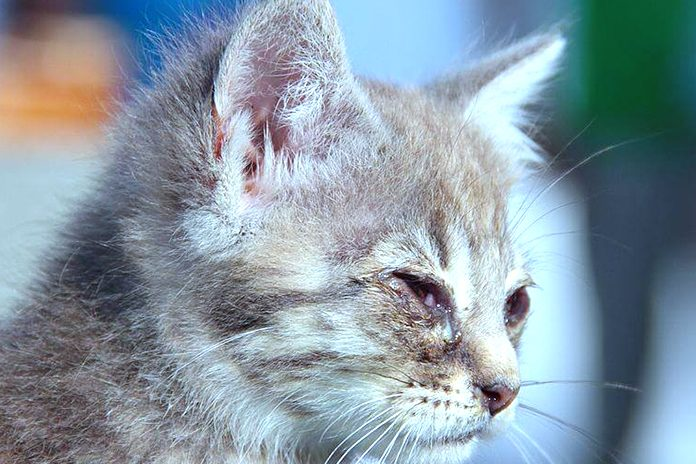
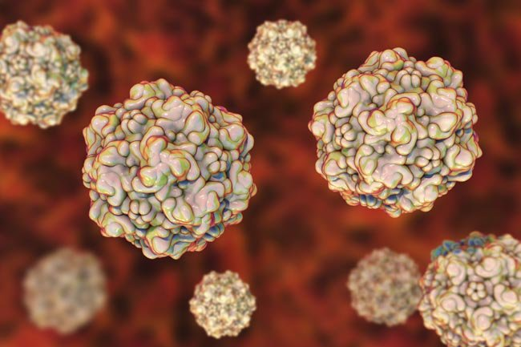
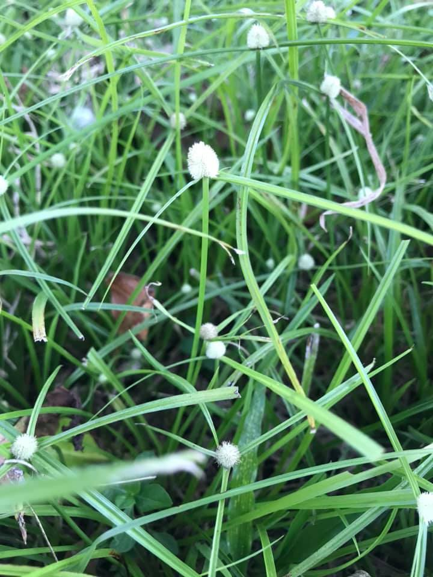
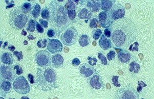
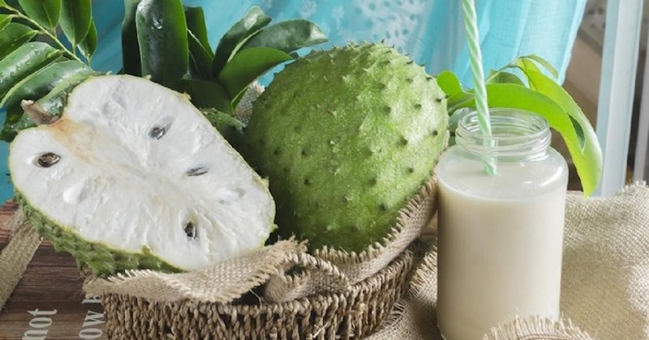

| Types of disease or wounds |
Cure Tips (Used Natural Materials) |
| The intestines come out of the cat's stomach. |
Stick to the ice then sprinkle sugar on the cat's intestines so that it shrinks and pushes in. |
| The cat's eyes are watery and itchy. |
The ingredients used to treat it are cinnamon and water only.
Boil the two ingredients together until it boils.
After the water changes color, dip a cotton ball and rub it on the eyes of the cat you want to treat.
|
| Parvo is a viral disease that is easily contagious and attacks kittens aged 4 to 12 weeks.
The Parvo virus can infect other cats so quickly and cause sudden death.
Parvo Virus Symptoms:
Not happy
Do not want to eat or drink
Watery mouth
Slimy stool
|
Boiled water from a grass plant:
The material used to treat it is a grass plant.
A handful of grass trees filled with roots, boiled with 500ml of water.
Boil until the water is approximately 1 to 2 inches from the finger.
Feed or mix just like that into their drinking water.
Food:
Boil the grass plant until it is soft and easy for the cat to chew.
You can also finely chop the leaves of the grass tree to be sown raw into wet food.
Also put a bunch of whole grass into the chicken stew or any homemade wet food as a vegetable.
#No side effects.
#Can be drunk, eaten or fed at any time.
#There is no quantity limit.
#Suitable for fever, colds and energy for cats.
#Special for cats that have no energy:
Mix 1 teaspoon of sugar approximately 10 to 15 ml of boiled water.
Feed them between 5 to 10 ml through a syringe for several times at least 1 to 2 hour intervals.
|
| FIP is a disease caused by the feline coronavirus that is transmitted through the sharing of :
food
feces
body fluids
sneezing |
Cats infected with this disease will cause them to experience cramps, organ failure, weight loss and visual impairment.
FIP disease is not contagious to dogs and humans.
Soursop leaves is one way to cure this disease.
The first step, boil 5 pieces of Soursop leaves with a measure of 4 cups of water until the water shrinks into a measure of 2 cups.
Cool the water and fill it into a bottle then store it in the fridge.
Give the cat to drink the boiled water 2 times a day, morning and night with a measure of 2 ml of water.
At the same time, we still need medicines from veterinarians.
|
| Additional knowledge of Soursop leaves is also good for humans, which are: |
It is believed to be able to prevent and cure cancer.
Reduces back pain.
Strengthens the body's resilience.
Reducing diabetes.
Lowers high blood pressure.
Overcoming hemorrhoids.
Treating nerve and nerve pain.
|